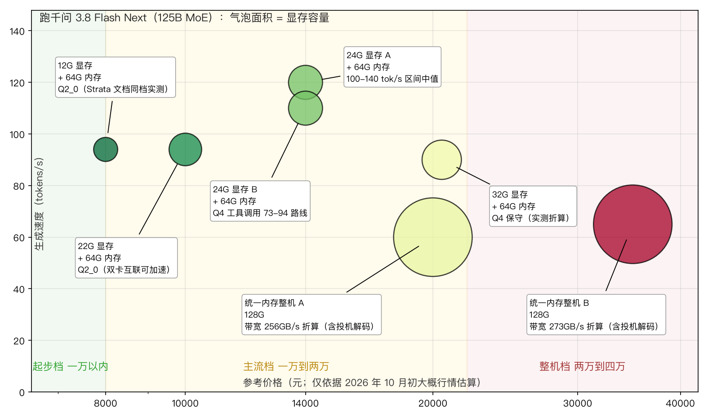

当做地球科学的同学也开始关心模型的价格，大概说明大模型已经成了很多人日常工作的一部分。而这段时间在线服务接连中断的报道说明，这种依赖的可用性并不掌握在自己手里。这篇以我这段时间重度使用的Qwen3.8-Flash-Next为例，聊一下本地部署的两条代表性的路线，以及当前的大致成本。
大模型正在成为越来越多人的日常刚需
前些天有一位大学时期的同学问我，最近用模型是不是成本挺高的，他感觉有一段时间以来，几家在线服务商好像都涨价了。
这位同学是做地球科学研究的，日常工作跟数据科学关系不大。连他这样背景的人，都开始关注模型的价格了，这大概能说明一个趋势：很多人的日常工作和生活已经离不开大模型了。大模型成了很多人的常用工具，某种程度上已经成了类似基础设施的东西。很多人已经习惯了它，甚至没法想象没有它的日子——就像很多人习惯了微信和支付宝这样的在线支付一样，一旦深度绑定，再想抽身就不那么容易了。
既然习惯到了这种程度，那么有一个问题就值得想一想：如果有一天离开了在线服务，我们是不是就什么都做不了了？打个比方，现在的经济活动很依赖在线支付，要是没有了在线支付，很多东西都会受影响；同样地，要是没有了在线大模型，或者在线大模型涨价了、服务不稳定了，我们该怎么办？
在线大模型的可用性与价格，都不掌握在自己手里
要回答这个问题，先得看看在线大模型是不是真的存在不稳定和涨价的情况。答案是，这方面的公开报道并不少，而且不是哪一家的问题。
先看时间线。2026 年 3 月底，DeepSeek 在 3 月 29 日晚出现一次持续约 12 小时的宕机，3 月 31 日下午又一次中断约 1 小时 [1][2][3]；当时抖音豆包公开评价说，DeepSeek 的频繁故障是「爆发式增长下的必经阶段」，并且自己也承认，大模型推理对算力消耗巨大、硬件供应链紧张制约了扩容速度 [4]。这段话从同行的角度，说出了行业共同的处境。4 月，Anthropic 旗下的 Claude 在半个月内出现了 7 次服务中断，4 月 16 日那次故障前后持续近 3 小时，高峰期有超过 6000 名用户同时提交报错；按照官方状态页的数据，截至 4 月 8 日的 90 天里，Claude API 的正常运行率只有 98.95%，明显低于企业级标准的 99.99% [5]。到了 7 月 25 日，轮到 OpenAI：ChatGPT、API、Codex 全线瘫痪，故障持续超过 8 个小时，没有任何预警，官方状态页只确认错误率升高、不给恢复时间 [6]；钛媒体的统计说，OpenAI 每一年都会发生重大事故，但从未公开披露过根本原因 [6]。9 月 3 日则是规模更大的一次：ChatGPT、Claude、Grok 在相同时段集体宕机，持续约 3 小时 40 分，谷歌 Gemini 和微软 Copilot 也收到大量中断报告，AI 编程工具 Cursor 因为依赖这三家的接口被一并波及 [7][6]。再看同年 5 月 DeepSeek 的情况，也就是开头同学提问时我查证的那批报道：5 月 8 日新版本上线流量激增，网页端和 API 整体停摆了几个小时；5 月 24 日大规模宕机，官方状态页红色告警持续一整夜，抢修了十几个小时 [8]；5 月 28 日上午 10 点 21 分网页和 API 同时不可用，10 点 50 分恢复，前后约 29 分钟，是当月第五次、年内第 18 次性能异常 [9][10][11]。
把这些报道汇总成一张表，各个平台的记录大致如下：
| 时间 | 服务方 | 事件 | 影响与持续 | 出处 |
|---|---|---|---|---|
| 2026-04-01 至 04-16 | Anthropic（Claude / Claude Code / API） | 半个月 7 次中断；16 日故障近 3 小时，6000+ 用户报错 | 90 天正常运行率 98.95%，低于 99.99% 的企业标准 | [2] |
| 2026-03-29 至 03-31 | DeepSeek | 29 日晚宕机约 12 小时；31 日午后再度中断约 1 小时 | 两日两次，网页与 API 均受影响 | [12][3] |
| 2026-05-08 | DeepSeek | 新版上线流量激增，网页与 API 全线停摆 | 数小时 | [9] |
| 2026-05-24 | DeepSeek | 大规模宕机，网页端与 App 全部无法访问 | 约 13 小时 | [8] |
| 2026-05-28 | DeepSeek | 网页与 API 同时不可用，提示「服务器繁忙」 | 约 29 分钟；年内第 18 次异常 | [9][10][11] |
| 2026-07-25 | OpenAI（ChatGPT / API / Codex / Sora） | 全球性宕机，全线瘫痪，无预警 | 超过 8 小时，覆盖北美、欧洲、亚洲主要市场 | [6] |
| 2026-09-03 | OpenAI / Anthropic / xAI | 集体宕机，Gemini、Copilot 收到大量中断报告，Cursor 被波及 | 约 3 小时 40 分 | [7][6][13] |
这份时间线里有两个细节，比表中任何单独一次故障本身更值得琢磨。一是 9 月 3 日的集体中断：ChatGPT、Claude、Grok 三家在同一个时段一起出问题，不是巧合——业内人士的分析指向微软 Azure、Cloudflare 这类多家大模型公司共享的云算力基础设施 [7]。也就是说，各家在线大模型虽然彼此是竞争关系，底层却可能建在同一批云设施上；故障的时候可能会一起故障，用户想靠「换一家服务」来避开，未必躲得开。二是 3 月底豆包的那次表态：当 DeepSeek 因频繁故障受到批评时，抖音豆包公开说这是「爆发式增长下的必经阶段」，并且自己也承认，大模型推理对算力消耗巨大、硬件供应链紧张制约了扩容速度 [4]。竞争对手承认整个行业都在面对同样的算力缺口，这比任何局外人的批评都更能说明问题。
至于涨价，同学的感觉也不是错觉：免费的服务在收紧、付费的额度在变贵，而且这背后有一层更硬的逻辑。时代周报引用的数据显示，2026 年 5 月中旬那一周，全球大模型总调用量攀升到 28.9 万亿 token，其中中国大模型占 9.22 万亿、环比增长接近 20%；与互联网产品「边际成本趋近于零」的经典模式不同，大模型每一次对话都要消耗实实在在的算力，用户越活跃，成本越刚性 [11]。业内因此有一个共识：单纯靠免费获客的 C 端模式很难持久 [11]——涨价与服务收紧，大概就是这个判断在现实中的样子。
我自己前几天也遇到一次突然中断，正好是在工作过程中，手上正在进行的步骤就停在那里，只能等。原因方面，业内人士的分析是，用户规模增长过快，服务器算力扩张难以匹配激增的流量需求 [14]，这个缺口恐怕短期内补不上。
这些事实摆在一起，结论就比较清楚了：在线大模型的可用性与价格，两样都不掌握在自己手里。所以大概从两三周前开始，我做事的时候基本都以本地大模型为主了。
千问 3.8 Flash Next 的规格：125B 参数、全量权重需要上百 G 显存
我用的是千问 3.8 Flash Next（Qwen3.8-Flash-Next），先介绍一下这个模型大概是什么规格。
它是一个 125B 参数的模型，也就是总参数量一千二百五十亿（模型主页见文末 [15]）。不过它不是稠密模型，而是混合专家（mixture of experts，MoE）模型：模型里有 24576 个专家网络，模型每处理一个词元（token），只从这里面选择激活 10 个专家参与计算 [2]。这个机制对部署的意义在于，虽然全部权重都要驻留在存储里，但每次推理实际参与的参数只有一小部分，计算的开销主要由被激活的那部分专家决定。
对本地部署来说，关键数字是显存需求。这个模型如果按 16 位精度存放，权重就需要大约 250GB 显存；按 8 位是大约 125GB；按常见的 4 位量化，也要大约 62GB——再加上上下文占用的键值缓存，一张普通的 24G 显卡无论怎么样都放不下整个模型，必须想办法把权重分散到显存、内存、磁盘这些不同的存储层级里去。
两条路线：一台高性能机器跑多个模型，或多台设备合跑一个模型
要把这样的模型在本地跑起来，现在有两个比较有代表性的方向。
第一个方向，是把一台机器上的显存和统一内存尽量全部利用起来，分给几个大模型同时运行。这一类里 Halogen 是个典型：它由 Peonist 开发，专门为某一款统一内存芯片平台编写，每个 kernel 都只为这一块 GPU 和一个模型家族优化，不追求通用，也没有回退路径 [12]。这类平台的特点是统一内存大，某些配置可以达到 128GB [12]，Halogen 把这部分尽量利用起来，本地就可以同时放置多个模型。适合的场景大概是：存储、内存、显存都不紧张，同时对速度或者并行有一定要求。
第二个方向，是把所有可以使用的设备放到一起，运行一个模型。Strata 是这一类里的代表：开源，MIT 许可，底层使用 llama.cpp / ggml 那一套 [2]。具体说，它把最常用的专家放在显卡显存里，全部专家放在系统内存里，处理器同时计算其余部分，SSD 上再放一张大的查找表 [2]。这样一来，显存的缺口就由内存来补。仓库的实测机器是一张 12G 显存的显卡加 64GB 内存 [2]；对内存的要求写得很明白：最少 32GB 也能跑，但只能装下砍掉一半专家的 Coder 专用版，64GB 才能把所有尺寸都跑全 [2]。要是有两三张卡，还可以一起分担同一个模型 [2]。
这两个方向并不冲突，往后看，大概也会是本地部署的两个主流方向。
前者是机器规格高，同时运行几个模型；后者是设备比较分散，合起来运行一个大的。
选哪一种，主要看你手头的硬件和要处理的事情。
12G 显存加 64GB 内存的实测速度：这个配置已经能够流畅运行
第二个方向，现在已经可以在具体设备上运行了。
12G 以上显存的设备，用 Strata 就可以流畅运行千问 3.8 Flash Next。Strata 项目上实测的是一张 12G 显存的显卡加 64GB 内存的机器，在 Q2_0 量化下可以达到 94 tokens/s [4]；24G 显存的显卡大约 100 到 140 tokens/s [2]。作为参照，我前几篇实测文章里那些跑本地模型的机器，日常对话能稳定用的一般在十几到二十几个 tokens/s；这个速度已经明显高出一截，日常对话、工具调用这类场景完全够用，跟不少在线服务比也不处于下风。
这里显存和内存要配合着看：12G 显存只是下限，权重里放不进显存的那部分靠内存装着，所以想把这个尺寸跑全，内存应当以 64GB 为宜——仓库对硬件要求的原话是「64GB 运行所有尺寸」，32GB 只能装下砍掉一半专家的 Coder 版 [4]。
再往后，8G 显存的设备应该也可以运行对应的 MoE 模型，比如 35B-A3B 这种：总参数量 35B，每个词元（token）只激活约 3B 的参数，4 位量化下权重约 20GB [4]，其中放不进 8G 显存的部分要靠内存装着，所以内存同样不能省，参照上面 12G 显存配 64GB 内存的比例，8G 显存的机器至少应当 32GB 起步、最好也是 64GB——这一条是按 Strata「内存多少决定能装哪个尺寸」的规则推的，它文档里没有直接写 8G 的组合，真要上手就以实际测试为准。 MoE 在这种场合其实正好帮了本地部署的忙：每次前向计算只激活少数专家，推理时需要读取的参数量比同等总参数的稠密模型低，几台设备合在一起运行，速度反而可能有所提高。
本地模型的合理定位：工具调用、信息检索与代码翻译
本地大模型的能力，未必有在线旗舰模型那么强，不过这更多是定位的问题。
对于能力有限的模型，比较推荐的用法是：让人掌握方向，让模型执行细节。把需求分析、方案设计这类决定成败的环节留在人这一侧；交给模型的工作，则尽量是边界清楚、步骤明确的任务——工具调用、信息检索，以及代码翻译：思路由人讲清楚，每一步怎么做由人交代明白，模型照着写出来。
这种分工的好处有两个。一是模型的能力要求降低了，本地模型够用；二是过程可控——模型没有被要求去推测需求、做设计，它自行发挥的空间被压到了最小，产出的不确定性也就随之降低。用能力较弱的模型做事，关键就是不让它失控：不要让它猜，而让它照做。
反过来，如果让本地模型自己去推测需求、设计架构，那它确实还有明显差距。这不是本地模型的独有问题，能力越强的模型在这种失控模式下不确定性越大；只是在本地模型这里，更应当从一开始就避开这种用法。
从 kiwix 的离线归档习惯说起：本地部署是一份备份
这个习惯可以交代一下来历。开头提到的那位同学是学地球科学的，我也是——我读的博士就是地球科学方向。做这一行经常要出野外，一进山区可能就没有信号了，如果路线深入，甚至要到没有网络覆盖的无人区。但野外的很多时候又需要查资料、查文档：地层划分的规范、岩石矿物的鉴定特征、前人的区域地质报告，这些都不会因为你进了无人区就不再需要。所以很早就接触到了 kiwix 以及它对应的 ZIM 格式——一种把整个网站打包成单文件、可以完全离线检索的归档格式，维基百科、 Stack Exchange、不少文档站都有现成的 ZIM 包可以下载。硬盘里存了一批离线维基和文档，到现在还保持这个习惯。
平时这些归档可能看不出什么用处，等到需要断开网络、或者无法访问外部服务的时候，就知道有用了。
大模型大概也是类似的情况。习惯了有问题就问模型的人，如果某一天网络中断、服务关闭或者账号出了问题，再想做事就缺少了一个环节。在本地部署一个大模型，相当于给自己的工作方式留一个备用的选项：能力未必是最好的，但是它随时都在。对野外或者没有网络的环境来说，这一份「随时都在」可能不只是备用，而是唯一能用的那份。
成本估算：一万出头有机会起步，常见的组合在两万上下，几万的也有对应选项
新的本地推理框架逐渐流行之后，把有一定能力的大模型在本地流畅运行，成本门槛比过去低了不少。但具体要花多少钱，得按路线分开算，而且得按现在的行情算——这一轮硬件的价格一直在往上走。
统一内存小主机：这是走 Halogen 路线最直接的一台整机，CPU 与 GPU 共享一块 128GB 的统一内存，不需要再单独配显卡 [16]。价格方面，以搭载 128GB 统一内存的整机来算是，媒体评测期在 1.5 万元上下，现在普遍涨到 2 万元左右，部分机型到 2.6 万 [17]；入门的 64G 内存版本，行情价也从前一年的 1.07 万元左右涨到了 1.5 万元上下，一年涨了 4300 元 [18]。不过对跑本文讨论的这类 125B 模型来说，64G 内存装不下 4 位量化后的全部权重（约 62GB），真正可用的是 128GB 内存的版本 [4]——所以说现在这类小主机的实际入手价位就是两万上下：比之前涨了近一倍，但按它承载的能力算，还可以接受。
CUDA 生态的统一内存个人工作站：统一内存同为 128GB。英国创世版官价已从 3999 美元上调到 4699 美元，国内整机从「3 万出头」涨到了接近 4 万 [17]。单机跑大模型的论坛评价并不高——带宽偏低、单机偏弱，它的设计用法本来就是几台互联组一个小集群。它的价值要按集群来算账：本地跑 DeepSeek 上一代的 V4 Flash（总参 284B），两台 128GB 机器合计 256GB 统一内存正好装下权重 [19]；而今年 9 月开源的 V4.1 Flash 尺寸翻上去了，总参 748B、开源权重实测约 510GB，其中 MoE 与主模型权重约 306GB 必须驻留在内存里、另有约 204GB 的 Engram 知识权重可以下沉到 SSD [19]。按每台 128GB、扣除约 20 多 GB 的系统与框架开销来算，两台合计约 230GB 余量，装不下这 306GB 的核心权重；三台合计 384GB，扣掉开销后约 360GB，装下核心权重还有约 54GB 留给长上下文与多会话——所以跑 V4.1 Flash 要三台起，单条生成 40 到 60 tokens/s、prefill 2500 到 3000 tokens/s [19]。买台数按「将来想跑到哪一代」来定：两台这一档对应的是 V4 Flash，三台对应 V4.1 Flash，而这类工作站官方支持四台互联，这个规模内互联效率不打折扣 [19]。但是成本实在是太高了。
24G 或 32G 显存的显卡 + DDR4 ECC 服务器平台 + 拆机大内存：这是 Strata 支持、走「多台设备合跑一个模型」路线里性价比比较突出的组合 [4]。显卡一侧，24G 显存这一档可选面比较广，预算充裕一些可以上 32G 显存的高端卡 [20]。以 24G 这一档为例，二手价在我 9 月初写显卡行情那篇时查到的是 4800 到 6400 元、典型 5000 到 5600 元 [20]；最近这轮行情上来之后，成色好的二手普遍涨到了八九千。32G 显存这一档的价格也在同一条曲线上：上个月还是 1.1 万出头，现在已经报到了 1.4 万左右 [20]——也就是选 32G 这一步的溢价本身，一个月内就抬高了约三千元。内存与平台一侧，不买全新 DDR5：一是贵，二是有带宽上的顾虑——DDR4 的频率原本就低于 DDR5，而本文这类 MoE 推理恰恰是访存受限的负载（前文算过 8G 显存也要靠内存装专家，生成速度基本由内存带宽决定），消费级主板常见的双通道四条内存对这种负载可能就不够了，往往要上四通道甚至八通道才能把带宽喂足；而多通道、大内存、带纠错，这些恰好就是服务器平台的属性。所以用 DDR4 ECC 服务器平台（带纠错内存的服务器主板）加拆机的 ECC 内存条便宜得多——这一轮涨价的源头是 AI 数据中心在抢内存产能，主要厂商把先进产能转去做 HBM 和 DDR5，DDR4 与 DDR3 的产线缩到原来的四分之一左右，但存量市场仍在换新和扩容 [21]；64GB DDR5 RDIMM 服务器条的合约价半年翻倍，而 DDR4 的拆机 ECC 条虽然也涨，仍有现货流通、价格低一个档 [21][22]。整机算下来，显卡 6000 到 9000、服务器平台加内存 3000 到 5000、机箱电源等若干，24G 卡配置大约 1 万到 1.5 万元可以起步；若上 32G 显存这一档，仅显卡一项就比 24G 档高出五千到七千元，整机要按两万三左右的预算来打算。这一路的代价也要说清楚，而且要想在前面：服务器平台是多通道加多核的设计，功耗高，满载电费不少；噪音也大——机架式的风扇是按机房环境设计的，放书房或者卧室里，那声音跟台式机完全不是一个量级，长期放在自己每天活动的房间里，使用体验是实实在在要考虑的问题（真要用，建议放在阳台、储物间，或者干脆是隔层的机房）。
汇总一下当前行情：
| 方案 | 路线 | 当前价位（2026 年 10 月行情） | 说明 |
|---|---|---|---|
| 24G 显存显卡 + DDR4 ECC 服务器平台 + 拆机 ECC 大内存 | Strata 合跑一个模型 | 约 1 万-1.5 万起步 | 性价比路线，A 卡生态需折腾，二手行情浮动大 [4][20][21][22] |
| 32G 显存显卡 + 服务器平台大内存 | Strata 合跑一个模型 | 约 2.3 万（32G 档已从 1.1 万涨至 1.4 万） | 显存更大，长上下文与更高精度有空间；显卡单月涨约三千 [20] |
| 统一内存小主机（128GB 统一内存） | Halogen 一机多模型 | 约 2 万（部分机型 2.6 万） | 不用单独配显卡，一年从 1.07 万涨到现在 [18][17] |
| CUDA 生态的统一内存工作站 | Halogen 一机多模型（CUDA） | 3 万多，接近 4 万 | 官价 3999→4699 美元；单机速度一般，组集群才有意义 [17] |

上图中横轴是整机价格（2026 年 10 月行情），纵轴是跑千问 3.8 Flash Next 的生成速度，气泡面积代表显存或统一内存的容量，颜色越偏红价格越高。几个配置的位置值得留意：12G 与 22G 显存的两档在起步区，速度 90 tokens/s 上下，是入门最低的两档；两个 24G 档落在主流区，速度更高、价格也只贵了一截，是图上「价格 - 速度」性价比最好的区域；32G 显存档价格上一大步（2 万+），买它图的不是速度，是把权重多装一些在显存里换长上下文与更高精度的余量；最右侧两台 128G 统一内存整机气泡最大、价格最贵，速度按各自带宽折算（一台 256GB/s、另一台 273GB/s）在 60 到 70 tokens/s 一档，其中 256GB/s 那台略慢一点——没有独显那一路快，但靠统一内存不用拼装、开箱即整台。要快而省钱，24G 显卡这一档是最优区域；要省心且内存大，统一内存整机是另一个方向的答案。
也就是说，一万出头有机会起步，比较舒服的配置在两万上下，预算到几万可以买到 CUDA 生态的整机或者多卡平台。在线大模型是按月付费、价格还在上行的流动成本，本地硬件是一次性的固定支出；前者随用量与调价浮动，后者配置一次之后就不再受调价影响。
开支随用量分摊：某些任务只有本地跑得起
换个角度算，这一两万的硬件支出用来支付在线服务，也许够用好几年。所以本地部署的意义不是「省钱」，至少不光是省钱——它的意义是：有了本地模型，在线模型就从「唯一的依靠」变成了「可选的补充」，不再是谁涨价、谁断服都没有替代品的那种局面。
所以，单看一次性的投入，一两万不算便宜，但有的场景，可能只有本地模型来做才比较划算，不过只要使用的时间足够长、用量足够大，这笔钱是可以慢慢分摊的，说到底就是规模效应。比如批量整理知识库，又或者是涉及到不便联网的数据（地学领域常有这种情况）。
前一段时间，我想对自己积累下来的所有代码做一次处理：先从中提炼技能，顺路整理成知识库。这件事用在线大模型来跑，结果是花了将近 700 美元才做完。之后我还打算把所有的参考文献也用类似的方法处理一遍——这件事用在线模型恐怕就很不现实了：太贵，光预印本网站就有几万篇文章，就算单篇的处理费用比代码那次低很多，乘上几万篇也是一笔相当可观的支出。
这种规模大、重复性高的整理工作，可能正是本地大模型的用武之地。机器购置一次，之后运行多少次都不会再产生按量的费用，用得越多，单次成本就越低。私有知识库这类事情，或许本来就比较适合在自己的机器上运行。
经过这几周的过渡，我现在日常的所有任务——工具调用、信息检索、代码翻译——全部都用本地模型了。在线服务我可能还会用，只是作为备选了，用哪一家的、用多少、什么时候用，现在就很灵活了。
参考文献
- 中华网：《DeepSeek上次崩还是1天前 服务再度异常引发关注》 https://news.china.com/socialgd/10000169/20260401/49374515.html（2026-03-31，「服务器繁忙」报错；3 月 29 至 30 日近 12 小时中断的回顾）
- DoNews：《DeepSeek一日内两次服务中断，3月31日宕机一小时后恢复》 https://www.donews.com/news/detail/4/6492239.html（2026-03-31 17:02 异常、18:05 恢复，约 1 小时）
- 游侠网：《豆包点评DeepSeek频繁宕机 爆发式增长下的必经阶段》 https://www.ali213.net/news/html/2026-3/1004159.html（2026-03-30，大模型推理算力消耗巨大、硬件供应链紧张制约扩容速度）
- Strata 开源项目仓库与文档（多档消费级显卡的实测速度、混合专家激活机制、显存与内存与处理器协同的分层放置、最小内存要求） https://github.com/Niko1221/Strata
- 快科技（转自凤凰网科技）：《半个月崩7次！估值3800亿AI顶流算力告急：6000人集体哀嚎》 https://tech.ifeng.com/c/8sMu5IZFGPt（2026-04-16，Anthropic 半月 7 次中断明细、90 天正常运行率 98.95% 对企业级 99.99%）
- DoNews：《美国主流AI服务集体宕机：ChatGPT、Claude、Grok等均异常》 https://www.donews.com/news/detail/4/6697106.html（2026-09-03/04，持续约 3 小时 40 分，编程工具因依赖三家接口被波及）
- 东方财富网（转自21世纪经济报道）：《黑色星期四！GPT、Claude、Grok出现历史级集体宕机》 https://finance.eastmoney.com/a/202609043864546436.html（2026-09-03/04，三家公司状态页确认；业内指多家公司共享的云基础设施可能是原因；Downdetector 故障报告：OpenAI 超 1.2 万份、另两家约千份）
- 36氪：《DeepSeek史诗级宕机13小时，一夜崩上热搜，网页版更新》 https://36kr.com/p/3746701577372168（2026-05-24，网页端与 App 全部无法访问、官方状态页红色告警、抢修一整夜）
- 快科技：《本月第四次！DeepSeek又崩了约半小时 现已修复》 https://m.mydrivers.com/newsview/1125563.html（2026-05-28，10 时 21 分起中断、10 时 50 分恢复，约 29 分钟）
- 澎湃新闻：《DeepSeek崩了》 https://baijiahao.baidu.com/s?id=1866419420998691474（2026-05-28，用户在社交平台的反馈与官方状态页信息）
- 东方财富网（来源：时代周报）：《DeepSeek又崩了，年内18次异常，大模型C端免费模式走到十字路口》 https://finance.eastmoney.com/a/202605283753063011.html（2026 年内第 18 次部分性能异常；OpenRouter 数据：全球周调用 28.9 万亿 token、中国 9.22 万亿、免费模式难持久）
- 北方网：《DeepSeek恢复服务！豆包：频繁崩溃是成长代价》 http://it.enorth.com.cn/system/2026/03/30/059272852.shtml（2026-03-30，同行评价频繁故障为「爆发式增长下的必经阶段」）
- 钛媒体：《Codex也断了：OpenAI三线齐崩，Agent时代的宕机账单怎么算》《OpenAI全球宕机8小时未完：当9亿人的AI依赖成为单点故障》 https://www.tmtpost.com/agent/ai-article/19383（2026-07-25，对话、API、编程工具全线瘫痪超 8 小时、无预警）
- 东方财富网：《DeepSeek为何总是"崩"？》 https://finance.eastmoney.com/a/202605293753451713.html（业内人士归因：用户规模增长过快，服务器算力扩张难以匹配激增的流量需求）
- 千问 3.8 Flash Next 模型主页 https://huggingface.co/Qwen/Qwen3.8-Flash-Next
- Halogen 开源项目仓库（面向统一内存芯片平台，文档给出长文本预填充速度等指标） https://github.com/peonist-ai/halogen-flash-server
- 什么值得买：一篇本地 AI 小型主机与个人 AI 工作站涨价的追踪帖 https://post.smzdm.com/p/awwr2xlk/（2026-08-16；记录相关设备一年内价格上行幅度，归因于 AI 数据中心争抢内存与 HBM 产能）
- 什么值得买：一篇统一内存小主机一年价格变化的追踪帖 https://post.smzdm.com/p/aqrmepek/（2026 年 9 月；从去年 1.4 万元涨到 2.2 万元且缺货）
- 抡锤者论坛：关于某超大混合专家模型开源权重与多机部署的一篇帖子 https://lcz.me/topic/1611（2026-09-11；权重分层构成、机台数与部署可行性、单条与并发生成速度）
- 本文作者此前的文章：《本地跑模型的显卡怎么选？从2000到2万的价位全景指南》 https://mp.weixin.qq.com/s/MPnQmPaWOy_RMt29gJ-a7w?token=379900131&lang=zh_CN（2026-09-13 行情）
- 什么值得买：一篇服务器内存价格半年变化的追踪帖 https://post.smzdm.com/p/ae6vk73z/（2026-09-19；服务器内存合约价半年翻倍、交期大幅拉长）
- 什么值得买：一篇旧代内存价格变动的追踪帖 https://post.smzdm.com/p/al3xg7mg/（2026-08-23；旧代拆机服务器内存仍有现货流通、比新一代便宜）